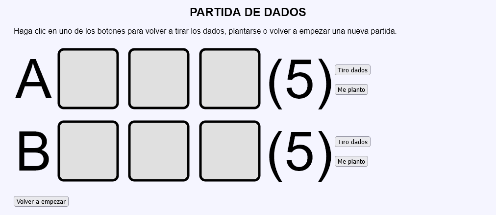
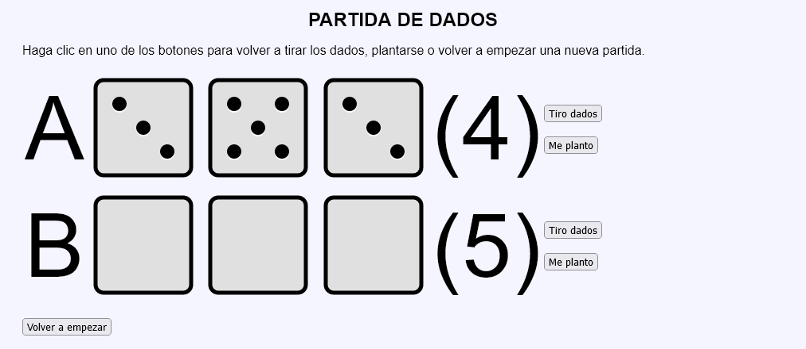
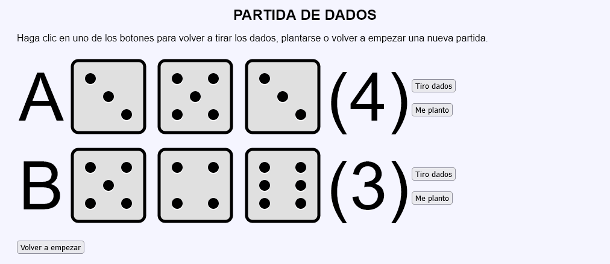
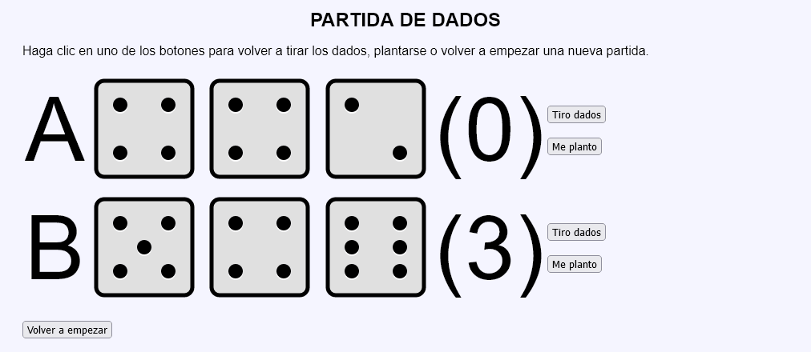
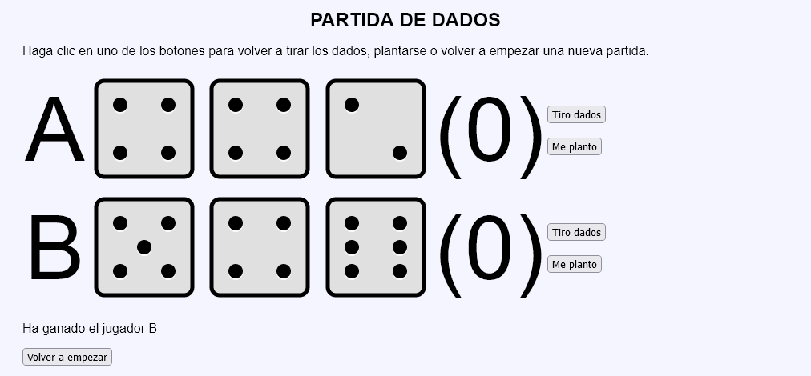

En este ejercicio se debe crear un programa que simule un Partida de dados para dos jugadores.





<table>
<tr>
<td style="font-size: 7em">A</td>
<td>
<img src="img/dados/1.svg" alt="1" width="140" height="140">
<img src="img/dados/1.svg" alt="1" width="140" height="140">
<img src="img/dados/6.svg" alt="6" width="140" height="140">
</td>
<td style="font-size: 7em">(0)</td>
<td>
<button type="submit" name="accion" value="tiroA">Tiro dados</button><br>
<br>
<button type="submit" name="accion" value="plantoA">Me planto</button>
</td>
</tr>
<tr>
<td style="font-size: 7em">B</td>
<td>
<img src="img/dados/2.svg" alt="2" width="140" height="140">
<img src="img/dados/6.svg" alt="6" width="140" height="140">
<img src="img/dados/2.svg" alt="2" width="140" height="140">
</td>
<td style="font-size: 7em">(0)</td>
<td>
<button type="submit" name="accion" value="tiroB">Tiro dados</button><br>
<br>
<button type="submit" name="accion" value="plantoB">Me planto</button>
</td>
</tr>
</table>
<p>Ha ganado el jugador B</p>